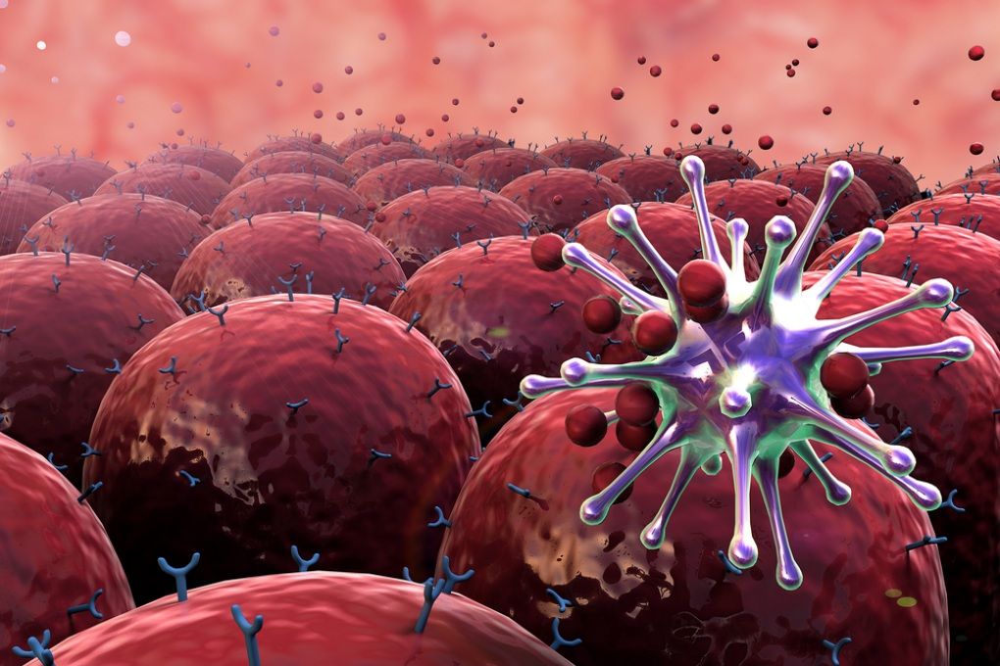
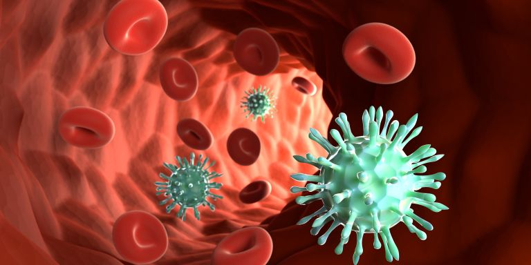

Le microplastiche rappresentano un potenziale fattore di rischio per il sistema immunitario, poiché vengono riconosciute come particelle estranee e possono interferire con i meccanismi di difesa. L’esposizione continua può alterarne il funzionamento.

Quando entrano nell’organismo, le microplastiche vengono identificate come corpi estranei, attivando una risposta immunitaria:
Tuttavia, le microplastiche sono difficili da degradare, causando una risposta persistente.
L’interazione prolungata porta a uno stato di infiammazione cronica:
Questo aumenta il rischio di numerose patologie sistemiche.
Le microplastiche inducono la produzione di ROS, causando:
Il sistema immunitario può diventare iperattivo, aumentando il rischio di malattie autoimmuni.
Oppure può indebolirsi, riducendo la capacità di difesa contro infezioni.
Le microplastiche possono trasportare:

Questo amplifica gli effetti dannosi sull’organismo.
Le microplastiche alterano il microbiota intestinale, influenzando il sistema immunitario: